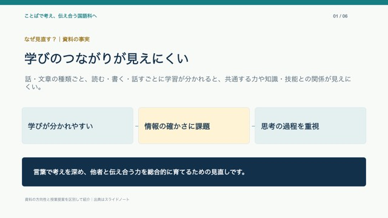

読む・書く・話す／聞く
国語科の三領域は引き続き学びの軸として示されます。領域をなくすのではなく、領域をまたいで力を働かせる学びを組み立てる方向です。
国語科｜審議まとめを読む
読む・書く・話す／聞くの学びをつなぐ案を、資料の事実と授業への提案に分けて約90秒で確認できます。
スライド式90秒解説

音声なしのスライド再生版です。再生すると約15秒ごとに切り替わります。ナレーション原稿と字幕は下から確認できます。MP4動画ではありません。
変わる？変わらない？
国語科の三領域は引き続き学びの軸として示されます。領域をなくすのではなく、領域をまたいで力を働かせる学びを組み立てる方向です。
話や文章の機能に着目し、「思考・判断・表現」を整理。知識・技能も「使って深める」「教養として深める」の二側面で示す方向です。
別々に学ぶと共通する力や知識・技能との関係が見えにくいこと、情報の妥当性・信頼性を確かめる必要が高まっていることが背景です。
ここでいう「続ける」は審議まとめに示された方向の要約です。正式な改訂後の確定事項を示すものではありません。
検索できる要点
読み違えないために
扱っているのは、2026年10月5日付「次期学習指導要領等に向けた審議まとめ」です。審議段階の改善方向として読みます。「話や文章の機能」の4分類は、資料で仮称・例示として提示されたものです。
短い記事で、読む→情報を確かめる→自分の意見を書く→対話する→書き直す。評価する力を活動のねらいに合わせ、書く手段も必要に応じて選べるようにします。
出典とページ
文部科学省「次期学習指導要領等に向けた審議まとめ」（2026年10月5日）資料1/4、国語 印刷頁127–140（PDF頁128–141）。主な参照箇所：改善方向 印刷頁129–133、情報・ICT 印刷頁138–139、書写 印刷頁140。
文部科学省の掲載ページを開く ↗本サイトは資料の要約と実践案を分けて掲載しています。授業案は公的資料の記述をもとにした提案であり、文部科学省の決定事項ではありません。